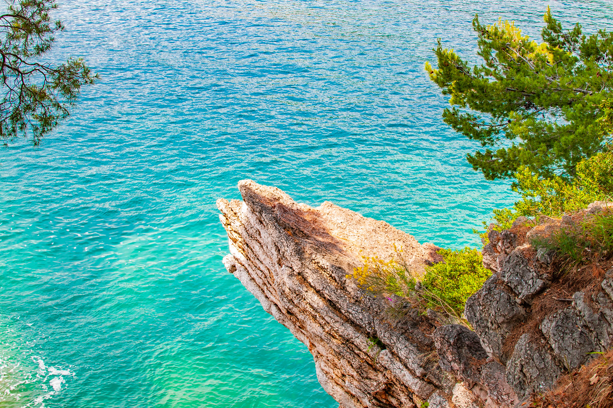
Il classico
Giro Costa dei Trabocchi
Navighi sotto i trabocchi e le falesie, con soste bagno nelle calette più belle. Mezza giornata o giornata intera.
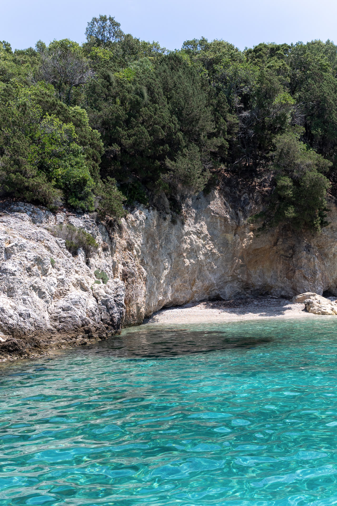
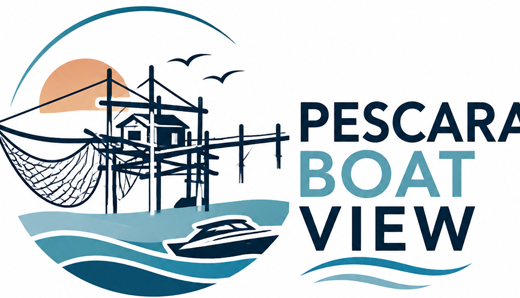
Giri in barca artigianali salpando da Pescara, lungo la Costa dei Trabocchi. Calette nascoste, pranzo a bordo, tramonti. Niente di esagerato: solo mare, lentezza e cose vere.
Abruzzo / Pescara / Costa dei Trabocchi
Proposte semplici e su misura: le combiniamo come preferisci. Una mezza giornata o un giorno intero, di mattina o al tramonto.

Navighi sotto i trabocchi e le falesie, con soste bagno nelle calette più belle. Mezza giornata o giornata intera.
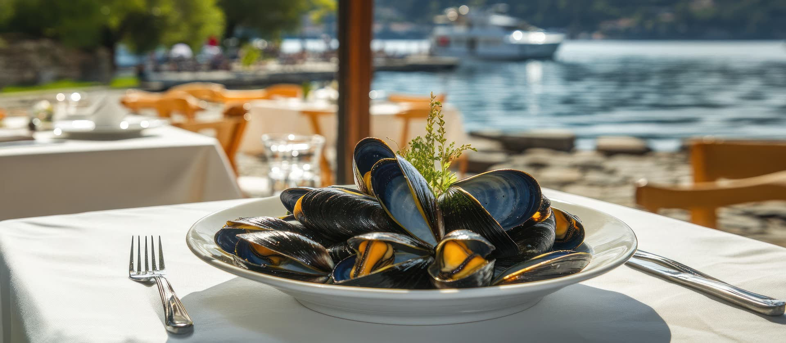
Cuciniamo piatti tipici a bordo, o si mangia su un trabocco.
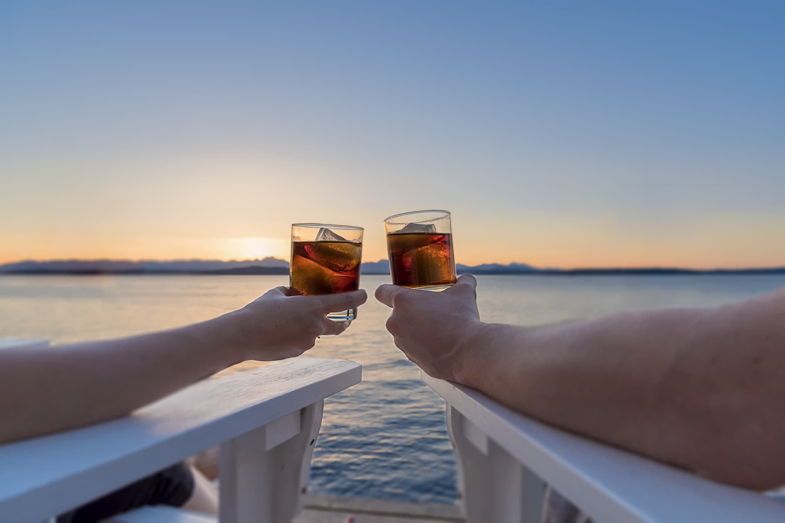
Aperitivo mentre il sole scende sull'Adriatico.
Ti caliamo nelle calette col tender. Ciambelle, giochi, snorkeling.
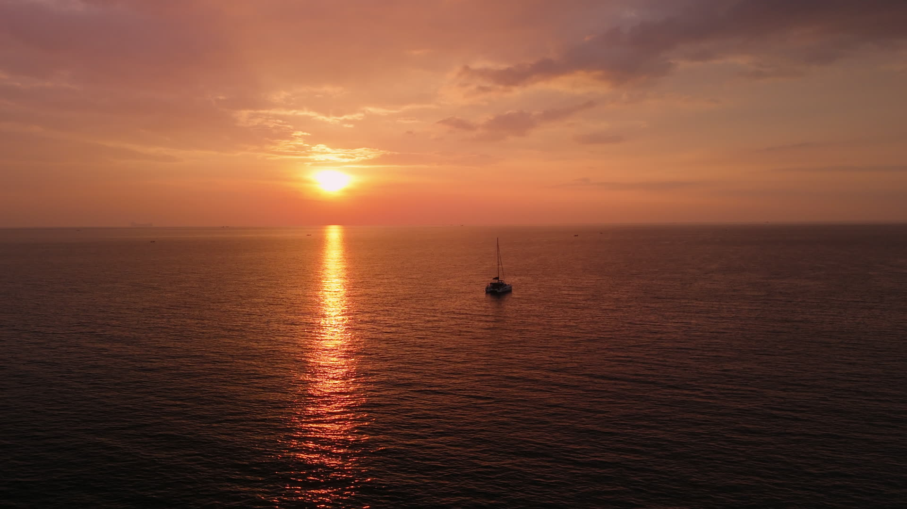
Una giornata intera, o la domenica dal mattino alla sera.
Calette, trabocchi e borghi di mare lungo la Costa dei Trabocchi: ecco dove ti portiamo.
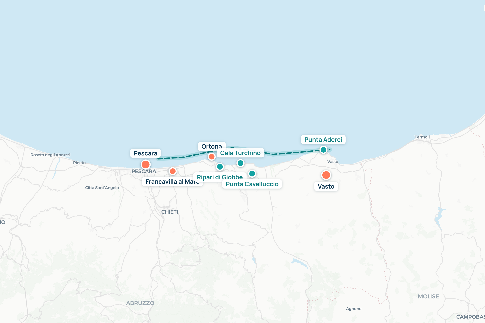
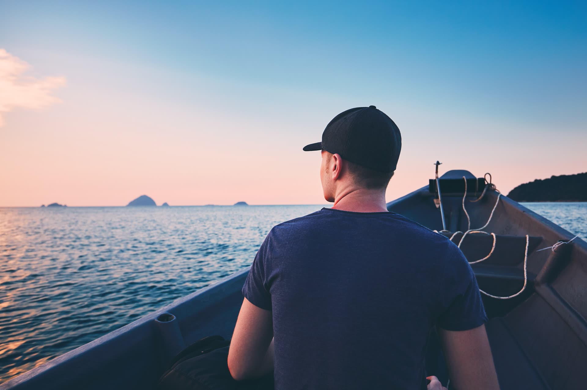
Chi ti accompagna non è un improvvisato: dieci anni come Ufficiale di Coperta Senior su navi da crociera internazionali. La stessa cura, oggi, per la tua giornata di mare.
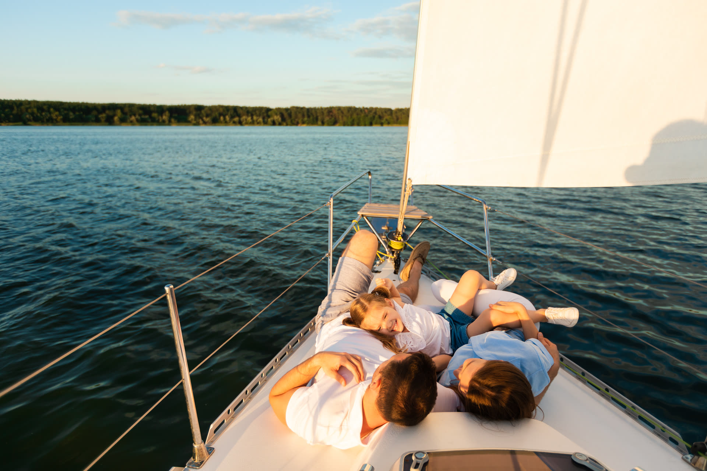
Circa 12 metri, con tettuccio abitabile e cabina riparata. Tender per scendere a riva, ciambelle e giochi, cucina a bordo su richiesta.
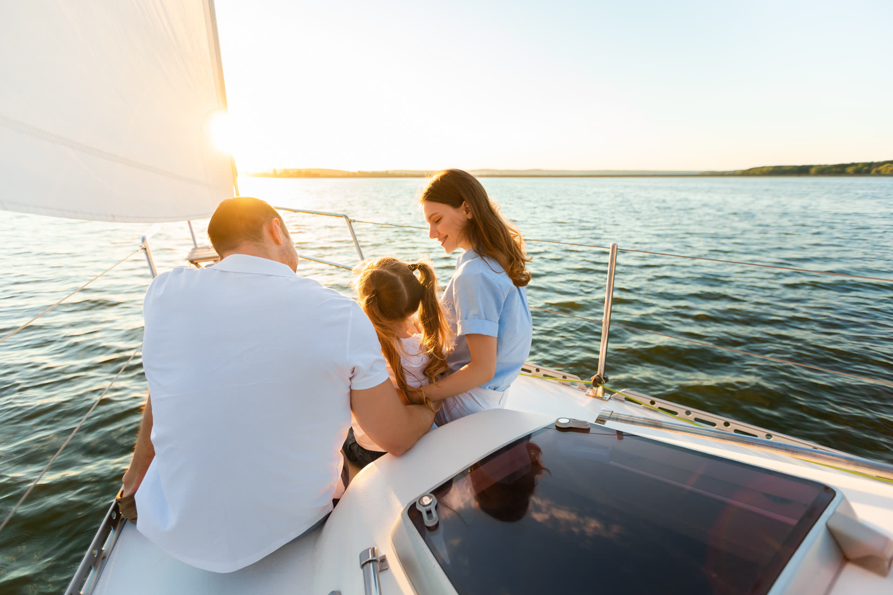
Famiglie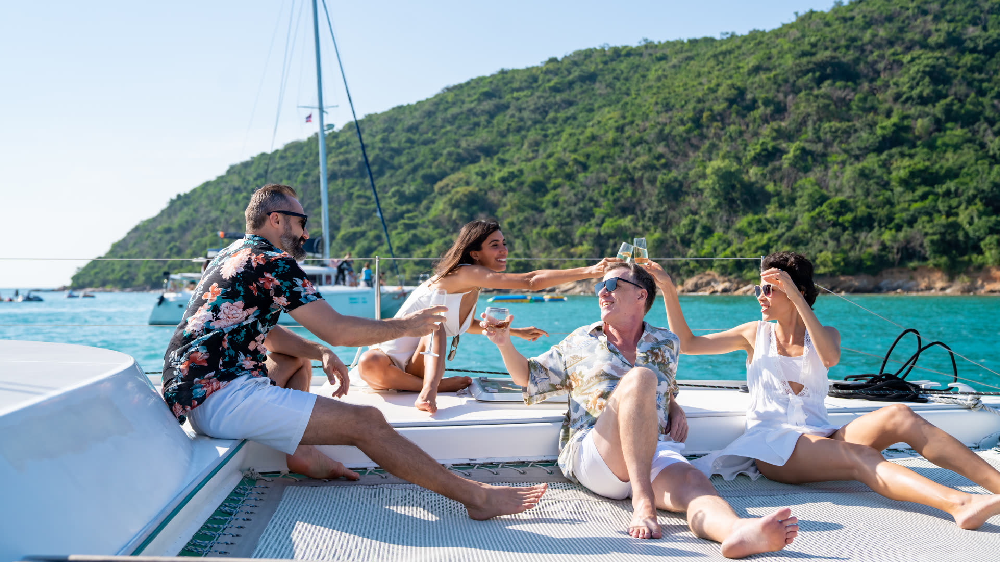
Gruppi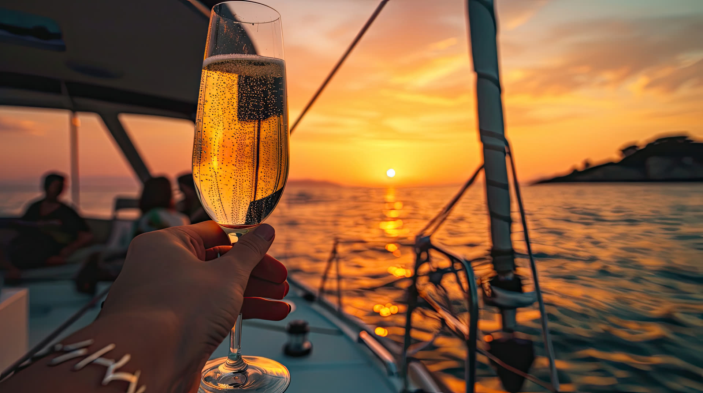
CoppieNiente prenotazioni online o calendari complicati. Ci pensiamo noi, da persona a persona — in italiano, inglese o russo.
Un messaggio su WhatsApp con giorno, persone e che giro ti piace.
Ti proponiamo orario, partenza e pranzo. Su misura, senza sorprese.
Ti aspettiamo al porto. Pensa solo a costume e buonumore.
Dicci come immaginavi il tuo giro in mare
e noi te lo facciamo vivere.
Tocca qui per scriverci · rispondiamo in giornata.
🇮🇹 Italiano · 🇬🇧 English · 🇷🇺 Русский